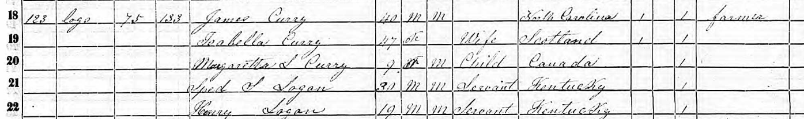
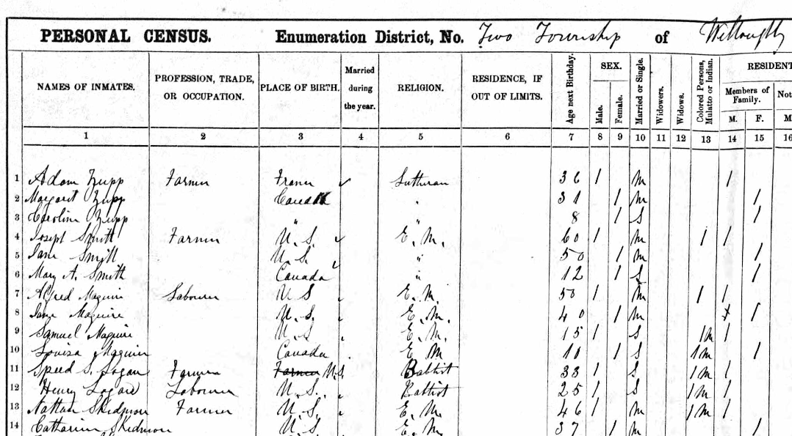
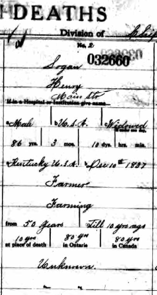
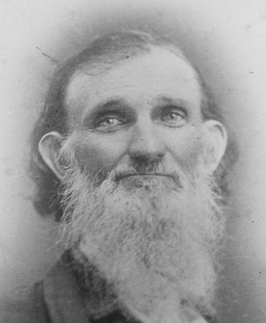

Henry Logan was born in Kentucky on 10 December 1837, but the earliest record I have found for him is almost eighteen years later and hundreds of miles to the north. In the 1855 New York State census, Henry appears alongside his brother Speed Smith Logan. Six years later, both men were in Canada. The records follow Henry there for the rest of his life, but they do not explain what brought the brothers north, who Henry's mother was, or exactly how their early lives in Kentucky fit into the wider Logan family.
The problem: Henry's life is visible, but his beginnings are not
From 1855 onwards, Henry can be followed with unusual consistency. Census after census gives him a place in the historical record. The difficulty lies before that first appearance. I do not yet have a childhood record that names his parents, and the Kentucky family I believe he belonged to contains another man called Henry Logan of almost the same age.
That combination creates the kind of problem that is common in nineteenth-century Black genealogy: the later evidence may be relatively strong while the generation before emancipation becomes fragmented, indirect or completely silent.
The first record: Henry and Speed Logan in New York, 1855
The first documentary record I currently have for Henry is the 1855 New York State census. Henry and his brother Speed Smith Logan appear together in the same household. Both are recorded as servants, and the entry places Henry's origins in Kentucky.

The racial terminology in nineteenth-century census records needs to be handled carefully. Across the records I have found for Henry, enumerators repeatedly placed him in categories then used for people regarded as Black or mixed-race, including the abbreviation “M” for the historical term “mulatto”. These labels are evidence about how officials classified Henry; they should not be treated as a complete description of how Henry understood his own identity.
Free in New York did not necessarily mean safe
By the time Henry appears in New York in 1855, slavery had been legally abolished in the state for nearly three decades. New York's final legal abolition took effect in 1827. Yet this does not mean that Black people in the northern states lived without danger.
The federal Fugitive Slave Act of 1850 required enforcement even in free states, and contemporary federal law placed alleged freedom seekers at serious risk of capture. The Library of Congress notes that the law threatened free as well as enslaved Black people because an accusation of fugitive status could itself be dangerous.
That context matters when looking at Henry and Speed's movements, but it does not prove why they moved. I do not currently have evidence that either brother escaped slavery, travelled through the Underground Railroad, or went to Canada specifically because of the Fugitive Slave Act. Those are historical possibilities that have to remain separate from the facts the records actually establish.
By 1861, the brothers were in Canada
Six years after the New York census, Henry and Speed appear in Canada. Henry's 1861 census entry records him as a labourer and Baptist. His brother Speed appears nearby as a farmer. This is the beginning of a long Canadian paper trail for Henry.

Canada offered a very different legal position. Slavery had been abolished across most of the British Empire in 1834, and thousands of African Americans crossed into British North America during the decades before the American Civil War. The Government of Canada describes Canada as a destination for African Americans seeking freedom from slavery, especially after the 1850 Fugitive Slave Act made the northern United States less secure.
Again, that wider history provides context rather than an answer. Henry and Speed may have moved for safety, work, family connections, opportunity, or a combination of reasons. At the moment, I cannot prove their motive.
A Canadian life that lasted more than sixty years
Henry remained in Canada for the rest of the documentary trail I have found. He appears in Canadian censuses from 1861 through 1921, and the records repeatedly identify him within the racial categories then used for Black or mixed people. His religion is consistently recorded as Baptist.
His wife appears to have been a white woman, although I do not yet regard that part of the family reconstruction as fully proved. As with the rest of the case, the aim is not to turn a likely answer into a certainty simply because it fits the story.
Henry died in 1924. His death record closes a paper trail that stretches from the 1855 New York census through more than six decades in Canada.

The Kentucky connection: Jesse Logan
The harder part of the case is working backwards from Henry towards Kentucky. I believe his father was Jesse Logan, born in Kentucky about 1807. Jesse had a wife and a documented family with several children — including, confusingly, another son called Henry, born about 1836.
Two men called Henry Logan, born within roughly a year of one another and connected to the same broader family, make ordinary name-and-date matching unreliable. A record for “Henry Logan, born Kentucky about 1836–1838” cannot simply be attached to whichever family tree looks most convenient.

DNA connected the family when the paper trail could not
The strongest reason I know I am working in the correct Logan family comes from DNA. Genetic matches connect Henry's descendants with the wider Logan family in a way that the surviving nineteenth-century documents alone do not.
DNA does not magically supply the missing birth record. It also does not, by itself, tell me who Henry's mother was. What it can do is establish that a documentary hypothesis is pointing towards the correct biological family and help separate that question from the confusion created by two similarly aged men with the same name.
The brother network may hold the next clue
Henry was not the only brother whose movements matter. Speed Smith Logan travelled north with him and remained an important part of the story. A third brother, Reuben Logan, is much less well documented.
When an ancestor's own early records are missing, siblings can become essential substitute evidence. A marriage, death, church entry, land record or newspaper notice for Speed or Reuben might name a parent or birthplace more precisely than Henry's records do. Their descendants may also carry DNA evidence that helps divide the paternal and maternal sides of the family.
The biggest unanswered question: who was Henry's mother?
This is the part of the case I most want to solve. I do not currently know Henry's mother's name, and I cannot yet say whether Henry, Speed and Reuben shared the same mother.
That uncertainty matters because the Logan surname may tell only part of the story. If Jesse Logan was their father but the brothers were born to a woman who is poorly represented — or not named at all — in surviving records, then the maternal line may require a completely different set of sources and a different DNA strategy.
It is also one reason I am cautious about trying to reconstruct Henry's childhood from the documented household of Jesse Logan. The presence of another son called Henry in that family is not a detail to explain away. It is evidence that the family structure was more complicated than the surviving records immediately reveal.
Why African American genealogy before 1870 can become so difficult
Researching Black and mixed-race families in the United States before emancipation can become exceptionally difficult because the record system itself was unequal. Enslaved people were often recorded without surnames or even without individual names in records created by enslavers, while free Black people could appear inconsistently across census, tax, court, church and local records.
For a family like Henry's, the research therefore has to move beyond a straightforward search for a birth certificate. Kentucky county records, probate and estate papers, deeds, tax material, court records, Baptist church records, records relating to free people of colour or enslavement, and the records of the wider Logan family may all eventually contribute pieces of the answer.
DNA is particularly valuable in this kind of case because genetic relationships can survive where the documentary trail does not. But it works best when paired with careful cluster research into siblings, cousins, neighbours and associated families rather than used as a shortcut around the records.
What can I actually conclude?
At this stage, the evidence lets me make several firm statements and several more cautious ones:
- Henry Logan was born in Kentucky in 1837 and is documented in New York by 1855.
- Speed Smith Logan was closely associated with him and appears with Henry in the northward migration.
- Henry was in Canada by 1861 and remained there throughout the later census record I have found.
- The censuses repeatedly classified Henry as Black or mixed-race using the racial terminology of their period.
- DNA connects Henry's descendants to the correct wider Logan family in Kentucky.
- Jesse Logan is my current candidate for Henry's father, but the exact documentary link still needs strengthening.
- Henry's mother remains unidentified, as does the question of whether Speed and Reuben shared the same mother.
- The reason for the brothers' move north remains unknown. The political and legal climate of the 1850s makes the migration historically significant, but it does not prove their personal motive.
What this case demonstrates
- Migration itself is evidence. Kentucky to New York to Canada is a pattern worth investigating, even when the reason for it is not documented.
- Historical context should guide research, not replace evidence. The Fugitive Slave Act and Canada's status as free territory matter, but they do not give us permission to invent Henry's story.
- Racial classifications can help distinguish same-name individuals. They are uncomfortable historical terminology, but they can be genealogically important when read critically.
- Same-name relatives demand caution. Two Henry Logans of almost the same age make assumptions especially dangerous.
- Sibling research matters. Speed and Reuben may eventually reveal what Henry's own records do not.
- DNA can reconnect a family across documentary gaps. It can establish biological relationships even when the nineteenth-century paper trail is incomplete.
- An unfinished case can still be valuable. Good genealogy is not measured by forcing every question into a neat answer; sometimes the achievement is knowing exactly what is proved and exactly what still needs to be found.
Where I would take the research next
The next phase would concentrate on Kentucky. I would build out Jesse Logan's wider family, associates and locations in detail, then search county-level probate, deed, tax, court and church material alongside records relating to Black residents, free people of colour and enslavement where those collections survive.
I would also treat Speed and Reuben as research subjects in their own right rather than supporting characters in Henry's story. Their marriages, deaths, church affiliations, land records and descendants may hold the clue that identifies the brothers' mother.
On the DNA side, the priority would be to separate matches attributable to the established Logan line from matches that may belong to Henry's unknown maternal family. As more descendants test, that distinction may become much clearer.
Have a family line that disappears before the Civil War?
Some family-history problems cannot be solved by searching one more census or trying another spelling. They require a combination of documentary research, historical context, sibling and associate research, and sometimes DNA.
If you are trying to reconnect a family across missing records, uncertain parentage, migration or a difficult nineteenth-century paper trail, you are welcome to send me an enquiry. I can review the evidence you already have and identify the most useful documentary or DNA route forward.